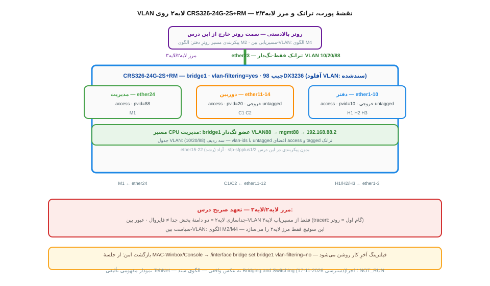

وضعیت درس: DRAFT / NOT_DEPLOYED — در انتظار مرور. (درس مصوب سرفصل S4: VLAN روی سوئیچ)
آموزش از سری switching؛ مخاطب: کارشناس شبکه.
سناریوی کاملاً فرضی و آموزشی با دادهٔ ساختگی؛ هیچ شبکهٔ واقعی دستکاری نشده و هیچ اجرای واقعی NOT_RUN است.
نمودار مفهومی و تألیفی است (نه عکس واقعی).
VLAN روی سوئیچ یعنی یک سوئیچ را به چند دامنهٔ پخش جدا تقسیم کنیم: هر پورت access با `pvid` فریمهای untagged ورودی را به یک VLAN طبقهبندی میکند و در خروجی دوباره untagged میشود؛ پذیرش ورودی (tagged/untagged) با `frame-types` کنترلی جدا است و باید صریح تنظیم شود؛ فقط ترانکِ فقط-تگدار VLANها را به روتر میدهد و مسیر CPU برای مدیریت با عضویت تگدار خودِ پل در VLAN مدیریت ساخته میشود. چهار نکتهٔ تعیینکننده: (۱) فیلترینگ VLAN آخرِ کار فعال شود وگرنه دسترسی مدیریت قطع میشود؛ (۲) روی CRS326 (چیپ 98DX3236) فیلترینگ VLAN پل با آفلود سختافزاری سازگار است — بازرسی پرچم `H` یک چک موردانتظر (NOT_RUN) در طرح این درس است، نه چیزی که اجرا شده باشد؛ (۳) این درس فقط datapath لایه۲ پیکربندی میکند و مسیریابی/سیاست بین-VLAN را به روتر واگذار میکند — CRS326 با RouterOS قابلیت مسیریابی دارد؛ این سناریوی آموزشی از آن استفاده نمیکند؛ (۴) ساخت کامل داخل یک بلوک stop-on-error با گارد مبنای آزمایشگاهی انجام میشود: عدم انطباق دستگاه با مبنی فرضی = توقف بدون هیچ تغییری.
مبنای آزمایشگاهی یکتا — بدون دوگانگی: این درس روی یک دستگاه آزمایشگاهی مجزا و disposable در حالت کارخانه/no-defaults اجرا میشود (دستگاهی که هیچ پل/عضویت/آدرس مدیریتی از قبل ندارد). این درس هرگز دستگاه موجود یا تولیدی را reset، adapt یا با پل پیشفرض کارخانه ترکیب نمیکند؛ اگر دستگاه با مبنای فرضی انطباق نداشت، گارد همانجا بدون هیچ تغییری متوقف میشود و مبنای آزمایشگاهی صریحاً dispose میشود. پیششرطهای out-of-band قبل از اولین اثر: جلسهٔ کنسول/MAC-Winbox روی خودِ دستگاه آزمایشگاهی قبل از فعالسازی فیلترینگ باز و وارسی شده باشد (مسیر بازیابی مستقل — بخش بازگشت امن)؛ هیچ وابستگی مدیریتی به VLANهای در حال ساخت وجود نداشته باشد.
| بند | مقدار فرضی |
|---|---|
| سوئیچ | CRS326-24G-2S+RM — ۲۴×GbE (RJ45) + ۲×SFP+؛ چیپ 98DX3236 (صفحهٔ رسمی محصول — این مدل RouterOS و مسیریابی را پشتیبانی میکند؛ این درس عمداً فقط datapath لایه۲ میسازد) |
| نگارش RouterOS | v7.16+ (dual boot RouterOS/SwOS — این درس روی RouterOS) |
| مبنای دستگاه | دستگاه آزمایشگاهی مجزا/disposable — حالت کارخانه/no-defaults؛ هرگز دستگاه موجود reset/adapt نمیشود |
| VLANها | 10 دفتر · 20 دوربین · 88 مدیریت |
| روتر بالادستی | یک روتر مجهز به پورت تگدار (مدل/پیکربندی سمت روتر خارج از این درس — الگوی M2)؛ فقط در «فاز routed اعلامشده» جدول آزمون نقش دارد |
| میزبانها | ۳ میزبان دفتر (ether1-3)، ۲ دوربین (ether11-12)، ۱ میزبان مدیریت (ether24) |
| اجرای واقعی | NOT_RUN — دستورها الگوی سند رسمی روی مبنای فرضی بالا |
| پورت | نقش | pvid (طبقهبندی ورودی untagged) | پذیرش ورودی (frame-types) | عضویت VLAN (خروجی) |
|---|---|---|---|---|
| ether1 تا ether10 | ۱۰ پورت دفتر — access | 10 | admit-only-untagged | vlan10 untagged |
| ether11 تا ether14 | ۴ پورت دوربین — access | 20 | admit-only-untagged | vlan20 untagged |
| ether15 تا ether22 | آزاد (رشد) | — | — | — |
| ether23 | ترانک به روتر — فقط تگدار | 1 (بیاثر روی تگدار) | admit-only-vlan-tagged | vlan10+20+88 tagged |
| ether24 | میزبان مدیریت — access | 88 | admit-only-untagged | vlan88 untagged |
| bridge1 (خودِ پل) | مسیر CPU | — | — | vlan88 tagged |
| sfp-sfpplus1/2 | بدون پیکربندی در این درس (رشد — الگوی S3) | — | — | — |
تفکیک سه کنترل جدا: (۱) pvid فقط طبقهبندی فریم untagged ورودی است؛ (۲) frame-types پذیرش ورودی (tagged/untagged) را جدا کنترل میکند — pvid بهتنهایی فریم تگدار ورودی روی پورت access را رد نمیکند، به همین دلیل پذیرش access صریحاً `admit-only-untagged` تنظیم میشود؛ (۳) عضویت جدول VLAN تعیین میکند هر VLAN روی کدام پورت و با چه حالت خروجی (tagged/untagged) وجود دارد.
هویت هر endpoint در کل درس یکسان است: H1/H2/H3 روی ether1-3 (VLAN10)، C1/C2 روی ether11-12 (VLAN20)، M1 روی ether24 (VLAN88)، روتر/فرستندهٔ آزمون پشت ether23.
| شناسه | نقش/میزبان | پورت سوئیچ | VLAN | آدرس سنتز اصلی | آدرس آزمون L2 (alias) | prefix آزمون L2 | gateway | حالت آزمون |
|---|---|---|---|---|---|---|---|---|
| H1 | میزبان دفتر آزمون | ether1 | 10 | 192.168.10.11/24 | — | 192.168.10.0/24 | بدون gateway (فاز L2) | همپیشوند L2 |
| H3 | میزبان دفتر آزمون | ether3 | 10 | 192.168.10.13/24 | — | 192.168.10.0/24 | بدون gateway (فاز L2) | همپیشوند L2 |
| C1 | دوربین آزمون | ether11 | 20 | 192.168.20.11/24 | 192.168.10.21/24 (فقط alias آزمون منفی) | 192.168.10.0/24 (روی alias) | بدون gateway (فاز L2) | همپیشوند L2 |
| C2 | دوربین آزمون | ether12 | 20 | 192.168.20.12/24 | — | — | بدون gateway (فاز L2) | مثبت همان VLAN |
| M1 | میزبان مدیریت | ether24 | 88 | 192.168.88.11/24 | — | — | بدون gateway | مدیریت |
| سوئیچ CPU | خودِ سوئیچ | مسیر mgmt88 | 88 | 192.168.88.2/24 | — | — | — | هدف تست ۳ |
| T-S | میزبان آزمون ترانک (fixture موقت روی لینک ether23، جای روتر — فقط مبنای آزمایشگاهی) | لینک ether23 | 10 (تگدار برای کنترل مثبت) | 192.168.10.2/24 (روی زیراینترفیس تگدار 10) | — | 192.168.10.0/24 | بدون gateway | فرستنده ترانک |
| روتر (خارج از درس) | مسیریاب لایه۳ | لینک ether23 (فقط فاز routed جداگانه) | 10/20 | 192.168.10.1 · 192.168.20.1 | — | متفاوت (routed) | gateway میزبانها فقط در فاز routed | فاز جداگانه اعلامشده |
قاعدهٔ طراحی جفت منفی: H1 و alias آزمونِ C1 همپیشوند (192.168.10.0/24) هستند تا طبق RFC1122 §3.3.1.1 تصمیم تحویل on-link گرفته شود و ARP مستقیم تلاش شود — اینطور timeout معنای جداسازی لایه۲ دارد، نه «نبود مسیر». کلیدهای آزمون و aliasها فقط متعلق به fixture سنتز همین درساند و plan بازگشتشان در جدول آزمون آمده است.

شرح متنی نمودار (جایگزین تصویر برای دسترسپذیری): یک سوئیچ CRS326 در مرکز؛ سمت راست (RTL) گروه پورتهای دفتر (ether1-10، VLAN10، pvid=10، خروجی untagged) با میزبانهای H1-H3؛ زیر آن دوربینها (ether11-14، VLAN20) با C1/C2؛ سمت چپ پورت مدیریت (ether24، VLAN88) با میزبان M1 و فلش تگدار از پل (bridge1) به داخل سوئیچ یعنی مسیر CPU؛ در بالا پورت ether23 بهصورت ترانک «فقط-تگدار» به جعبهٔ «روتر — سمت روتر خارج از این درس» وصل است و روی همان لینک برچسب «مرز لایه۲/لایه۳» خورده؛ زیر نمودار جعبهٔ یادآوری: «جداسازی لایه۲ ≠ فایروال؛ مسیریابی بین-VLAN کار روتر است». برچسب «تألیفی/مفهومی».
قاعدهٔ ساخت: گارد مبنای آزمایشگاهی و کل ساخت (پل، اعضا، ترانک، جدول VLAN، مسیر CPU، فیلترینگ-آخر) داخل یک بلوک `{ }` واحد stop-on-error است: خطای گارد، کل بلوک همانجا متوقف میکند و هیچ اثری افتاده نمیشود (هیچ فرمان add بدون گارد بیرون بلوک وجود ندارد). اگر گارد ناسازگاری با مبنای فرضی پیدا کرد — پل/عضویت موجود، مفقود شدن پورت نقشه، یا اشغال subnet مدیریتی — توقف بدون تغییر و بدون حذف/جابجایی منابع موجود؛ دستگاه با مبنای فرضی انطباق ندارد و باید صریحاً dispose شود.
# --- بلوک stop-on-error: گارد مبنای آزمایشگاهی + کل ساخت؛ فیلترینگ آخر ---
{
:if ([:len [/interface bridge find]] > 0) do={ :error "S4: bridge(s) exist — not the assumed no-defaults disposable lab baseline; stop, no changes, dispose the lab state explicitly first" }
:if ([:len [/interface bridge port find]] > 0) do={ :error "S4: bridge-port memberships exist — not the assumed baseline" }
:if ([:len [/system resource find where board-name~"CRS326"]] = 0) do={ :error "S4: board-name does not indicate CRS326 — device identity does not match the declared map" }
:if ([:len [/interface find where name="ether1"]] = 0) do={ :error "S4: ether1 missing — port map identity mismatch" }
:if ([:len [/interface find where name="ether11"]] = 0) do={ :error "S4: ether11 missing — port map identity mismatch" }
:if ([:len [/interface find where name="ether23"]] = 0) do={ :error "S4: ether23 missing — port map identity mismatch" }
:if ([:len [/interface find where name="ether24"]] = 0) do={ :error "S4: ether24 missing — port map identity mismatch" }
:if ([:len [/ip address find where address~"192.168.88."]] > 0) do={ :error "S4: management subnet 192.168.88.x already assigned — resource/management conflict, stop" }
/interface bridge
add name=bridge1 vlan-filtering=no protocol-mode=rstp
/interface bridge port
add bridge=bridge1 interface=ether1 pvid=10 frame-types=admit-only-untagged
add bridge=bridge1 interface=ether2 pvid=10 frame-types=admit-only-untagged
add bridge=bridge1 interface=ether3 pvid=10 frame-types=admit-only-untagged
add bridge=bridge1 interface=ether4 pvid=10 frame-types=admit-only-untagged
add bridge=bridge1 interface=ether5 pvid=10 frame-types=admit-only-untagged
add bridge=bridge1 interface=ether6 pvid=10 frame-types=admit-only-untagged
add bridge=bridge1 interface=ether7 pvid=10 frame-types=admit-only-untagged
add bridge=bridge1 interface=ether8 pvid=10 frame-types=admit-only-untagged
add bridge=bridge1 interface=ether9 pvid=10 frame-types=admit-only-untagged
add bridge=bridge1 interface=ether10 pvid=10 frame-types=admit-only-untagged
add bridge=bridge1 interface=ether11 pvid=20 frame-types=admit-only-untagged
add bridge=bridge1 interface=ether12 pvid=20 frame-types=admit-only-untagged
add bridge=bridge1 interface=ether13 pvid=20 frame-types=admit-only-untagged
add bridge=bridge1 interface=ether14 pvid=20 frame-types=admit-only-untagged
add bridge=bridge1 interface=ether24 pvid=88 frame-types=admit-only-untagged comment="میزبان مدیریت M1"
add bridge=bridge1 interface=ether23 frame-types=admit-only-vlan-tagged ingress-filtering=yes comment="trunk فقط-تگدار به روتر"
/interface bridge vlan
add bridge=bridge1 vlan-ids=10 untagged=ether1,ether2,ether3,ether4,ether5,ether6,ether7,ether8,ether9,ether10 tagged=ether23
add bridge=bridge1 vlan-ids=20 untagged=ether11,ether12,ether13,ether14 tagged=ether23
add bridge=bridge1 vlan-ids=88 untagged=ether24 tagged=ether23,bridge1
/interface vlan
add name=mgmt88 vlan-id=88 interface=bridge1
/ip address
add address=192.168.88.2/24 interface=mgmt88
/interface bridge
set bridge1 vlan-filtering=yes
:put "S4: build complete (filtering enabled last)"
}ترتیب داخل بلوک: گاردها قبل از اولین اثر اجرا میشوند (هویت مدل با board-name، موجود بودن پورتهای نقشه، نبود پل/عضویت موجود، نبود تداخل subnet مدیریتی)؛ فیلترینگ آخرین دستور است؛ مسیر بازیابی مستقل از قبل وارسی شده (بخش بازگشت امن). هیچ reset/delete/adapt روی دستگاه انجام نمیشود — بلوک یا کامل و روی مبنای فرضی اجرا میشود یا همانجا متوقف میشود.
قطعهٔ آموزشی از بلوک گام ۱ (جداگانه اجرا نشود):
/interface bridge port
add bridge=bridge1 interface=ether1 pvid=10 frame-types=admit-only-untagged
...
add bridge=bridge1 interface=ether24 pvid=88 frame-types=admit-only-untagged comment="میزبان مدیریت M1"انتظار و معنا: ۱۵ عضو access اضافه میشوند. تفکیک کنترلها: `pvid=10` فقط فریم untagged ورودی را به VLAN10 طبقهبندی میکند و خروجی همان پورت را untagged میکند؛ `frame-types=admit-only-untagged` پذیرش ورودی را جدا کنترل میکند — با pvid تنها، یک فریم تگدار با VLAN10 روی پورت access رد نمیشد؛ پذیرش access صریح تنظیم شده تا رفتار پورت کاملاً معلوم باشد.
قطعهٔ آموزشی از بلوک گام ۱ (جداگانه اجرا نشود):
add bridge=bridge1 interface=ether23 frame-types=admit-only-vlan-tagged ingress-filtering=yes comment="trunk فقط-تگدار به روتر"
/interface bridge vlan
add bridge=bridge1 vlan-ids=10 untagged=ether1,...,ether10 tagged=ether23
add bridge=bridge1 vlan-ids=20 untagged=ether11,...,ether14 tagged=ether23
add bridge=bridge1 vlan-ids=88 untagged=ether24 tagged=ether23,bridge1انتظار و معنا: `frame-types=admit-only-vlan-tagged` روی ترانک یعنی فریم untagged ورودی از سمت لینک drop میشود؛ `ingress-filtering=yes` یعنی تگِ VLAN ناموجود در جدول هم drop میشود. `bridge1` در ردیف 88 بهصورت tagged یعنی پل خودش عضو VLAN مدیریت است — همین عضویت، مسیر CPU گام ۴ را میسازد. اگر یک VLAN از جدول ترانک جا بماند، همان VLAN از آن سمت قطع میشود — رایجترین خطای این درس.
قطعهٔ آموزشی از بلوک گام ۱ (جداگانه اجرا نشود):
/interface vlan
add name=mgmt88 vlan-id=88 interface=bridge1
/ip address
add address=192.168.88.2/24 interface=mgmt88انتظار: میزبان M1 (ether24، pvid88) باید بتواند به 192.168.88.2 پینگ بدهد — این تست، مسیر CPU را اثبات میکند: فریم untagged از ether24 با pvid=88 وارد پل، بهعنوان عضو تگدار جدول 88 به CPU میرسد و پاسخ با مسیر معکوس برمیگردد. بدون عضویت `bridge1` در ردیف 88، این پینگ بعد از فعالسازی فیلترینگ قطع میشود.
قطعهٔ آموزشی از بلوک گام ۱ (جداگانه اجرا نشود):
/interface bridge
set bridge1 vlan-filtering=yesپرچم H — چک موردانتظر (NOT_RUN): طبق جدول «Bridge hardware offloading» سند رسمی، سری CRS3xx (چیپ 98DX3236) فیلترینگ VLAN پل را با آفلود سختافزاری پشتیبانی میکند. طرح این درس بازرسی `/interface bridge port print` را بهعنوان چک موردانتظر ثبت میکند — انتظار: اعضا پرچم `H` داشته باشند؛ از دست رفتن `H` یعنی خروج از آفلود و باید علتش از سند پیدا شود، ظرفیت حدس زده نشود. این بازرسی در این درس اجرا نشده است (NOT_RUN) و اندازهگیری throughput هم جداگانه NOT_RUN است — این درس فقط پشتیبانی سندشده و «چکِ برنامهریزیشده» را ثبت میکند، نه نتیجهٔ اجراشده.
این تفکیک تعهد صریح این درس است. مرز ادعا: CRS326 با RouterOS قابلیت مسیریابی دارد (سند رسمی محصول)؛ این درس عمداً فقط datapath لایه۲ پیکربندی میکند و مسیریابی/سیاست بین-VLAN را به روتر واگذار میکند — «ناتوانی سختافزاری» ادعا نمیشود.
| ادعا | معتبر؟ | توضیح |
|---|---|---|
| در این پیکربندی لایه۲، میزبان VLAN10 بهصورت لایه۲ میزبان VLAN20 را نمیبیند | ✓ | دامنهٔ پخش جدا: ARP یک میزبان به VLAN دیگر نمیرسد؛ `arp -a` روی H1 ورودی همسایهٔ هدف از C1 ندارد (با کنترل مثبت همان جفت و بازسازی نبودِ همسایه — جدول آزمون) |
| «این سوئیچ اصلاً مسیریابی ندارد» | ✗ | CRS326 با RouterOS مسیریابی را پشتیبانی میکند؛ ادعای درست: این سناریو فقط datapath لایه۲ میسازد و مسیریابی را به روتر واگذار میکند |
| اگر روتر بین VLANها مسیریابی کند، H1→C1 وصل میشود | ✓ (مشروط) | عبور از مسیر لایه۳ است؛ `tracert` یک چک شرطی است با پیشفرضهای خودش — پاسخ ICMP همیشه تضمین نمیشود؛ دیدهشدن گام اولِ روتر اثبات مرز است، ندیدنش بهتنهایی ردّ مسیر نیست |
| جداسازی VLAN جایگزین فایروال است | ✗ | سیاست بین-VLAN (اجازه/منع) کار روتر/فایروال است — الگوی M2/M4؛ این درس فقط مرز لایه۲ را میسازد |
فازها جدا اعلام میشوند و بعد از هر فاز، مبنای آزمون دقیق بازگردانده میشود: (الف) فاز L2 (روتر/مسیریابی غایب یا غیرفعال — فقط مبنای آزمایشگاهی)؛ (ب) کنترل مثبت disposable روی همان جفت منفی؛ (ج) فاز routed جداگانه و اعلامشده؛ بازگشت به مبنای L2. پیششرط هر اندازهگیری: ورودی همسایهٔ هدف روی میزبان مبدأ حذف یا ناموجودبودنش وارسی میشود (فقط ورودی متعلق به همین آزمون — بدون flush سراسری و بدون دستکاری همسایههای دیگر).
| # | فاز | از | به | فرمان/شرط دقیق | انتظار و شاهد قابلتفسیر |
|---|---|---|---|---|---|
| ۱ | L2 | H1 (192.168.10.11) | H3 (192.168.10.13) | `ping 192.168.10.13` | replies + ورودی همسایهٔ 192.168.10.13 در `arp -a` H1 — مثبت همان VLAN10 |
| ۲ | L2 | C1 (192.168.20.11) | C2 (192.168.20.12) | `ping 192.168.20.12` | replies + ورودی ARP — مثبت همان VLAN20 |
| ۳ | L2 | M1 (192.168.88.11) | 192.168.88.2 (سوئیچ) | `ping 192.168.88.2` | replies — اثبات مسیر CPU |
| ۴ | L2 — منفی | H1 (192.168.10.11) | C1 (alias آزمون 192.168.10.21 — همپیشوند، VLAN20) | پیششرط: ورودی همسایهٔ 192.168.10.21 در H1 حذف/ناموجود (فقط همین ورودی)؛ سپس `ping 192.168.10.21` | timeout + ورودی 192.168.10.21 در `arp -a` H1 incomplete/ناموجود؛ این بهتنهایی کافی نیست — با کنترل مثبت ۵ و تکرار منفی پس از بازگشت همراه میشود |
| ۵ | L2 — کنترل مثبت disposable | H1 | C1 (192.168.10.21) | تغییر موقت C1 به pvid=10 + عضویت untagged در ردیف 10؛ همان ping | replies + ARP کامل — اثبات سلامت میزبانها/روش؛ سپس بازگشت دقیق C1 به pvid=20 و عضویت قبلی و تکرار تست ۴ برای اثبات بازگشت جداسازی |
| ۶ | routed — فاز جداگانه اعلامشده | H1 (با gateway روتر در فاز routed) | C1 (192.168.20.11) | روتر با اینترفیسهای routed 10/20 فعال (اعلامشده، سمت روتر خارج از درس)؛ `ping` + `tracert` | اگر سیاست روتر اجازه دهد ping موفق میشود و مسیر از روتر است؛ `tracert` چک شرطی است — اگر پاسخ آمد گام اول = روتر (اثبات مرز)؛ نبود پاسخ بهتنهایی ردّ مسیر نیست؛ پایان فاز: بازگشت کامل به مبنای آزمون L2 |
| ۷ | ترانک — منفی untagged | فرستندهٔ آزمون T-S | لینک ether23 | کنترل مثبت اول: T-S با زیراینترفیس تگدار 10 باید H1 را ping کند (مسیر لینک/فرستنده/گیرنده سالم)؛ سپس T-S همان مقصد را با فریم untagged ping میکند | کنترل مثبت: replies؛ سپس untagged: هیچ پاسخی از H1 نیست — با کنترل مثبتِ پاسشده این «drop واقعی در پذیرش ورودی» است نه فرستنده/گیرندهٔ غایب. توجه: ترافیک آفلودشده لزوماً در capture سمت CPU دیده نمیشود — اتکا به sniffer/drop-counter سمت CPU بهتنهایی این تست را کامل نمیکند |
قواعد اجرا: پیششرط همسایه فقط برای ورودی متعلق به همین آزمون؛ بازگشت دقیق عضویت/pvid بعد از فازهای موقت؛ حذف فقط آدرس/alias/همسایهٔ متعلق به fixture سنتز؛ اجرای واقعی همهٔ پروبها و RouterOS در این درس NOT_RUN است — هیچ trace/flag/PASS جعلی وجود ندارد.
| نشانه | علت محتمل | بررسی | راهحل |
|---|---|---|---|
| بعد از روشنکردن فیلترینگ، یک گروه کامل قطع شد | ردیف آن VLAN از جدول جا افتاده | `/interface bridge vlan print` | افزودن ردیف با untagged همان پورتها (از مسیر بازیابی وارسیشده) |
| دسترسی مدیریت سوئیچ قطع شد | عضویت تگدار `bridge1` در ردیف 88 فراموش شده | ردیف vlan-ids=88 | افزودن bridge1 به tagged (از مسیر بازیابی وارسیشده) |
| میزبانهای یک VLAN همدیگر را نمیبینند | pvid پورتها اشتباه یا عضویت جدول ناقص | مقایسهٔ `pvid` اعضا با نقشهٔ پورت | اصلاح pvid / جدول |
| پرچم `H` اعضا از دست رفت | خطای پیکربندی باعث خروج از آفلود شده | `/interface bridge port print` | یافتن علت از سند؛ بدون حدس ظرفیت |
| گارد بلوک ساخت همانجا خطا داد | دستگاه با مبنای فرضی no-defaults انطباق ندارد | خروجی `:error` گارد | توقف بدون تغییر؛ dispose صریح مبنای آزمایشگاهی؛ هرگز پاکسازی/سازگارسازی دستگاه موجود |
| ترانک از سمت مقابل کار نمیکند | ناهمگونی VLANهای ترانک دو سر (این درس فقط سمت سوئیچ) | مقایسهٔ VLANهای مجاز دو سر | همسانسازی؛ سمت روتر = الگوی M2 |
| پیوند | مقصد |
|---|---|
| پیشنیاز (مسیر روتر و VLAN دفتر) | M2 |
| گام بعدی طبیعی (مسیریابی بین-VLAN/L3HW) | M4 |
| درسهای مرتبط | S3 · N1 طراحی دفتر · S5 |
| نقشهٔ کامل سری | topic map |
| پیادهسازی VLAN روی سوئیچ سازمان شما | خدمات راهاندازی شبکهٔ تهران |